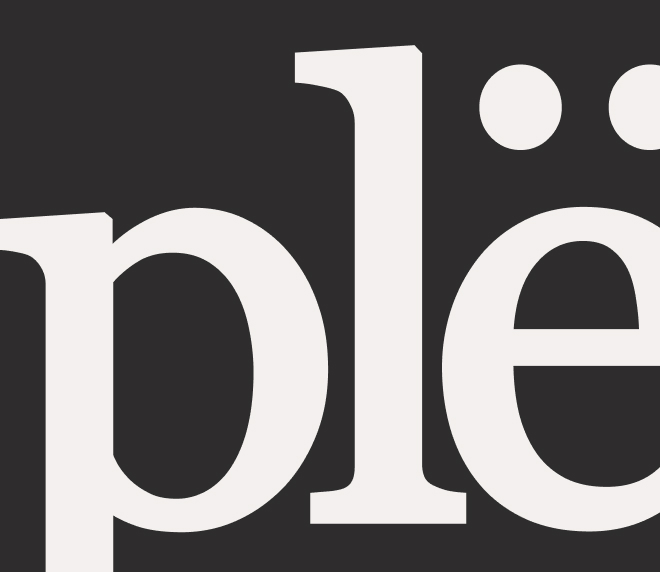

plёnka — это медиа о плёночной фотографии для новичков и профессионалов, где каждый сможет разобраться во всём процессе от снимка до проявки и вдохновиться легендарными аналоговыми кадрами для создания своих.
Ценности
Простота объяснений
Выделение главного
Творческий подход в обыденности
Трепетное отношение к процессу
Интерес к прошлому
Характер
Открытый и уверенный
Яркий и творческий
Добрый и искренний
Спокойный и ностальгический
Интересующийся
Tone of voice
Говорим лаконично, украшая речь средствами выразительности.
Миссия
Научить запечатлять ценное независимо от возможностей.
Логотип
Наш знак — это отсылка к стилистическому приёму помещения объекта в рамку.
Кроме того, две точки над «ё» напомнят внимательному зрителю саму плёнку и маленькие отверстия по вернему и нижнему краям.
plёnka
+
Сам символ вариативен: рамка внуитри может быть залита фирменными серым или терракоттовым цветами, а буквы — бежевым, или же внутри бежевый, а буквы и обводка — серые, также есть вариант серой обводки букв и фрейма.

Не допускается переворачивать, деформировать логотип, изменять цвета или положение слога внутри.
Цвета
В нашей палитре всего три цвета: приглушённый бежевый, черный и терракоттовый, отсылающий к винтажности и свету, при котором проявляются кадры.
#F3F0EE
#B8382F
#2E2D2D
Типографика
Типографика медиа, вдохновлённая советскими инструкциями к плёночным фотоаппаратам, переос-мысляет эти приёмы. Так, гротескные заголовки со «скачущими» буквами подчёркивают неидеаль-ность плёнки, а антиква в наборном тексте отсылает к книжным шрифтам.
Акцентные заголовки (max 90px)
COOLVETICA
Стандартные заголовки (max 116px)
Coolvetica regular
Подзаголовки (max 32px)
Georgia regular
Наборный текст в вебе в объемных абзацах (max 32px)
Manrope light
ПЛЁНКА
Графика
Основные графические приёмы в фирменном стиле — обработка фотографий в стиле ч/б иллюстраций и поясняющие элементы с цифрами и подписями.
Фирменная обработка
Фото в смарт-объект
«Трассировка контура» 100-150ед.
«Порог» 110-185ед.
Графика
Обводка 2.3 px
Только круг и диагональная линия
Шрифт Georgia 65% от диаметра
1: [важную роль в этом снимке играет вспышка, а исполь зование её в помещении с приглушённым светом создаёт контраст и усиливает насыщенность цветов, благодаря чему фото выходит таким ярким.]
Фотографии
Фотографии без ч/б обработки тоже могут использоваться, они должны соответствовать критерию винтажности: мяг-кий красновато-коричневый оттенок, легкаяттёмная винь-етка и зернистость.
Вариант настроек фото
«Контраст» до −25ед.
«Светлые участки» до −20ед.
«Тени» до −30 ед.
«Белые участки» до 46ед.
«Тёмные участки» до −22ед.
+
Понизить значение синего, повысить значение зелёных и красных тонов в «Оттенок и насыщенность»
«Добавить зерно» 15-20ед.
Масштаб фотографии от 30% до 60% экрана.
Чёрно-белые фотографии также использу-ются в стиле, если это исторически важные снимки, например в таймлайне.
1: [Фотография бульвара «Тампль в Париже» стала прорывом: на ней впервые были изображены люди] 2:[Снимок «Вид из окна в Ле Гра», сделанный в 1826 году.]
Композиция
На сайте используется 12-ти колонная сетка, по которой строго строится композиция, чтобы поддерживать концепцию советских инструкций с базовой вёрсткой.
Сетка
Отступ сбоку в 40px
12 колонок
Расстояние между колонками в 20px
В композиции важен контраст большого заголовка/фото и мелкой типографики в виде подрисуночных подписей.